Concavidad y convexidad
Cómo se «curva» una gráfica: cuándo parece una sonrisa y cuándo una cara triste, dónde cambia de una a otra (puntos de inflexión) y cómo juntar todo lo aprendido (dominio, asíntotas, crecimiento, extremos, curvatura) para dibujar una función.
0Antes de empezar U pp.134-135
La derivada $f'$ dice hacia dónde y con qué inclinación va la gráfica; la segunda derivada $f''$ dice cómo cambia esa inclinación, es decir, si la gráfica se curva hacia arriba (forma de sonrisa, «convexa») o hacia abajo (forma de cara triste, «cóncava»). Los puntos donde pasa de una forma a la otra son los puntos de inflexión. Con eso, y con las asíntotas, se dibuja una función completa.
U pp.134-135Qué necesitas saber ya U §2.2, §3.4, §1.4
- Derivar dos veces y factorizar la segunda derivada (Tema 2).
- Signo de una expresión por tabla de signos (puntos de prueba en cada intervalo).
- Crecimiento: $f'>0\Rightarrow f$ estrictamente creciente (Prop. 2.4, p. 98) y extremos relativos con $f'$ y $f''$ (tema 3.4, Prop. 3.7).
- Límites en $\pm\infty$ y límites laterales (asíntotas horizontales, verticales y oblicuas: §1.4, pp. 48-50, se repasan en el apartado 4).
Mapa del tema
| Apartado | Qué contiene | Dónde está |
|---|---|---|
| 1 Idea y definiciones | sonrisa y cara triste, cuerdas y tangentes, Def. 3.8-3.9, Ej. 3.27-3.28 | U pp.135-136 |
| 2 Criterios con derivadas | Prop. 3.9 y 3.10, tabla de signos de $f''$, «en un intervalo» | U p.136 |
| 3 Puntos de inflexión | Def. 3.10, Prop. 3.11-3.12, Ej. 3.29-3.30, tres casos delicados, leer $f'$ y $f''$ | U pp.137-138 |
| 4 Asíntotas y gráfica completa | repaso de asíntotas y receta de estudio completo | U pp.48-50 y 139 |
| 5 Ejercicios de E | 3.39-3.43, 3.45-3.48 (y partes de 3.30, 3.36) | E pp.114-134 |
| 6 Ejemplos propios | 4 ejemplos | propio |
| 7 Examen | 10 problemas de X | X |
| 8 Chuleta y comprobación | fórmulas, errores, lista | síntesis |
Qué se pide en los ejercicios y en el examen
(A) Intervalos de concavidad y convexidad de una fórmula: calcular $f''$, factorizar y tabla de signos (E 3.39; X 2013, 2016, 2018). (B) Lo mismo leyendo la gráfica de $f''$ o de $f'$ (E 3.36, 3.42, 3.45; X 2011, 2014, 2017). (C) Puntos de inflexión: decidir si un candidato lo es (E 3.40, 3.43; X 2016, 2018). (D) Estudio completo y dibujo con asíntotas (E 3.46, 3.48; X Electrónica). (E) Inventar una función con propiedades dadas (E 3.47, 3.48; X Electrónica). Es el tipo de pregunta corta (1 punto) que más se repite: conviene dominarla.
1La idea y las definiciones U pp.135-136
Mira una gráfica con forma de cuenco, como $x^2$: parece una sonrisa $\cup$. Esa función es convexa. Mira ahora una con forma de colina, como $\ln x$ o $-x^2$: parece una cara triste $\cap$. Esa función es cóncava. Dos maneras de comprobarlo sobre el dibujo:
- Cuerdas. Une con un segmento dos puntos cualesquiera de la gráfica. Si la gráfica queda por debajo del segmento en todo el tramo, es convexa; si queda por encima, es cóncava. (Es la definición de U.)
- Tangentes. Dibuja la tangente en un punto. En una sonrisa la gráfica queda por encima de sus tangentes; en una cara triste, por debajo. (Lo usan S y L.)
- Pendientes. Recorre la sonrisa de izquierda a derecha: la tangente empieza inclinada hacia abajo, se va aplanando, y acaba inclinada hacia arriba. La pendiente $f'$ va creciendo. En la cara triste ocurre al revés: la pendiente va decreciendo.
$f:D\to\mathbb R$ es convexa en un intervalo $I\subset D$ si $$f\big((1-t)x+ty\big)\le(1-t)f(x)+t\,f(y)\qquad\forall x,y\in I,\ \forall t\in[0,1].$$ Es decir, entre $x$ e $y$ la gráfica está por debajo del segmento que une $(x,f(x))$ y $(y,f(y))$. Intuitivamente, su gráfica tiene forma de $\cup$.
Cómo leer la fórmula. Cuando $t$ recorre $[0,1]$, el punto $(1-t)x+ty$ recorre el intervalo de $x$ a $y$ (en $t=0$ está en $x$, en $t=\tfrac12$ en el punto medio, en $t=1$ en $y$). A la izquierda de la desigualdad está la altura de la gráfica en ese punto; a la derecha, la altura de la cuerda en ese mismo punto.
U p.135$f(x)=x^2$, $x=0$, $y=2$, $t=\tfrac12$. El punto es $(1-\tfrac12)\cdot0+\tfrac12\cdot2=1$. Izquierda: $f(1)=1$. Derecha: $\tfrac12 f(0)+\tfrac12 f(2)=\tfrac12\cdot0+\tfrac12\cdot4=2$. Como $1\le2$, se cumple: en $x=1$ la gráfica ($1$) está por debajo de la cuerda ($2$). Eso no demuestra la convexidad (haría falta para todos los $x,y,t$), pero sí te enseña qué significa.
P$f:D\to\mathbb R$ es cóncava en un intervalo $I\subset D$ si $-f$ es convexa en $I$. Equivale a la desigualdad contraria: $f((1-t)x+ty)\ge(1-t)f(x)+tf(y)$ (gráfica por encima de la cuerda). Intuitivamente, forma de $\cap$.
U p.135Las gráficas de $f(x)=x^2$ y $g(x)=\ln x$ indican que $f$ es convexa y $g$ es cóncava.
U p.135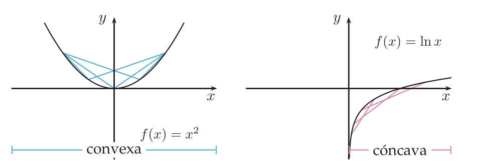
«Una función puede no ser cóncava ni convexa en un intervalo.» Tomamos $x=-1$, $y=1$: la parte derecha de la desigualdad es $(1-t)(-1)+t\cdot1=2t-1$ y la izquierda $f(2t-1)=(2t-1)^3$.
- No es convexa: $t=\tfrac14$: $(2t-1)^3=(-\tfrac12)^3=-\tfrac18$ y $2t-1=-\tfrac12$. Como $-\tfrac18>-\tfrac12$, no se cumple $\le$.
- No es cóncava: $t=\tfrac34$: $(2t-1)^3=(\tfrac12)^3=\tfrac18$ y $2t-1=\tfrac12$. Como $\tfrac18<\tfrac12$, no se cumple $\ge$.
- (En $[-1,0]$ es cóncava y en $[0,1]$ es convexa: la gráfica cambia de forma en el origen, que será un punto de inflexión.)
- Las desigualdades de las Def. 3.8 y 3.9 no son estrictas ($\le$, $\ge$). Una recta cumple las dos con igualdad: es a la vez convexa y cóncava (caso límite, poco interesante). Una función constante igual.
- La convexidad se predica de un intervalo. No existe «convexa en $(-\infty,-2)\cup(2,\infty)$»: hay que decir «convexa en $(-\infty,-2)$ y en $(2,\infty)$» (ver el apartado 2 y X 2018).
2Cómo decidirlo con derivadas U p.136
Usar la definición con cuerdas es «laborioso» (lo dice U). Pero basta recordar lo de las pendientes: en una sonrisa la pendiente crece, en una cara triste decrece. Y «crece» o «decrece» se lee en el signo de la derivada de la pendiente, que es la segunda derivada. Como el semáforo de $f'$ era «$f'>0$ sube, $f'<0$ baja», el de $f''$ es «$f''>0$ sonrisa, $f''<0$ cara triste». (Analogía del coche: $f'$ es la velocidad y $f''$ la aceleración; $f''>0$ significa que la velocidad va aumentando.)
PSea $f$ derivable en $I$. Entonces: $f$ es convexa en $I$ si y sólo si $f'$ es creciente en $I$; $f$ es cóncava en $I$ si y sólo si $f'$ es decreciente en $I$.
U p.136 L p.187Sea $f$ dos veces derivable en $I$. Si $f''(x)\ge0$ en $I$, entonces $f$ es convexa en $I$. Si $f''(x)\le0$ en $I$, entonces $f$ es cóncava en $I$.
El recíproco también es cierto (U no lo enuncia, pero los ejercicios lo usan): si $f$ es dos veces derivable y convexa en $I$, por la Prop. 3.9 $f'$ es creciente y la derivada de una función creciente es $\ge0$ (sus cocientes incrementales $\frac{f'(x+h)-f'(x)}{h}$ son $\ge0$, y su límite también), luego $f''\ge0$. En resumen, con $f$ dos veces derivable: $f$ convexa $\Leftrightarrow f'$ creciente $\Leftrightarrow f''\ge0$.
U p.136 L p.188 S p.293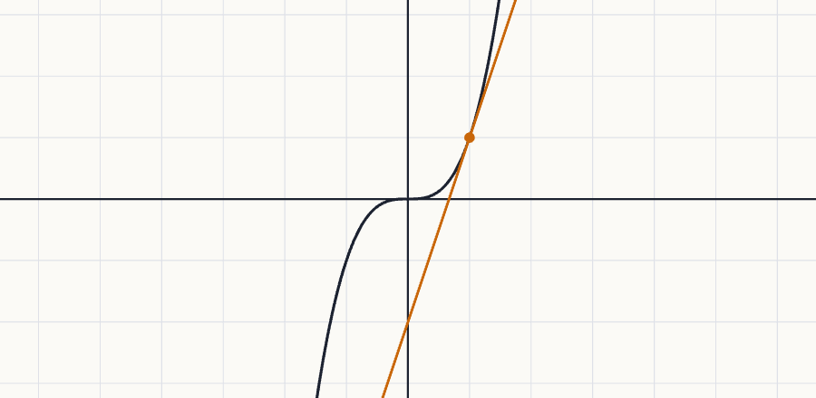
- Comprueba el dominio y que $f$ es dos veces derivable (anota los puntos «malos»: donde no hay derivada o no está definida).
- Calcula $f'$ y $f''$. Simplifica y factoriza $f''$.
- Halla los puntos donde $f''=0$ o $f''$ no existe. Con ellos, y con los puntos fuera del dominio, parte la recta en intervalos.
- En cada intervalo, signo de $f''$ (punto de prueba o signos de los factores): $+$ convexa, $-$ cóncava.
- Escribe cada intervalo por separado. Donde $f''$ cambia de signo en un punto del dominio hay inflexión (apartado 3).
Con $f''\ge0$ y $f''\le0$ se pueden cerrar los intervalos donde $f''$ se anula (E 3.39 y X lo hacen: «convexa en $[-1,0]$»); poner abiertos también es correcto. Lo que no se puede es unir intervalos con $\cup$.
E p.123- Estudiar el signo de $f'$ en vez del de $f''$: $f'$ da el crecimiento; $f''$, la curvatura.
- Pensar que «creciente» y «convexa» son lo mismo: $-x^2$ en $x<0$ es creciente y cóncava; $x^2$ en $x<0$ es decreciente y convexa.
- Concluir «$f''<0$ donde existe, luego cóncava» cuando hay un punto del intervalo sin $f''$ (E 3.41, $\sqrt{|x|}$).
- Unir intervalos con $\cup$.
3Puntos de inflexión U pp.137-138
Una carretera que pasa de una curva hacia la izquierda a una curva hacia la derecha: justo en el cambio el volante está recto un instante. Ese punto es la inflexión: la gráfica deja de ser sonrisa y pasa a ser cara triste (o al revés). En términos de $f''$: cambia de signo. Como $f''$ pasa del signo $+$ al $-$, o al revés, y suele ser continua, vale $0$ ahí (Prop. 3.11). Pero ojo: valer $0$ no basta, tiene que cambiar de signo.
PLlamaremos puntos de inflexión a los puntos en los que una función pasa de cóncava a convexa o de convexa a cóncava. Es decir, $c$ es un punto de inflexión para $f$ si existe $\varepsilon>0$ tal que $f$ es convexa en $(c-\varepsilon,c)$ y cóncava en $(c,c+\varepsilon)$, o viceversa.
U p.137 S p.294Si $f$ es dos veces derivable en $I$ y $c\in I$ es un punto de inflexión para $f$, entonces $f''(c)=0$. El recíproco es falso: $f''(c)=0$ es solo un candidato (ver $x^4$ abajo).
U p.137 L p.190Sea $f$ con $f''(c)=0$. Si la primera derivada de orden superior a dos que no se anula en $c$ es de orden impar, entonces $f$ tiene un punto de inflexión en $c$: pasa de cóncava a convexa si esa derivada es positiva, y de convexa a cóncava si es negativa. Si es de orden par, no hay inflexión (U no lo dice; se deduce como en la Prop. 3.8).
Truco: $x^3,x^5,\dots$ (orden impar) tienen inflexión en $0$; $x^4,x^6,\dots$ (orden par) no. Es el mismo truco que en 3.4 (Prop. 3.8), una derivada más arriba.
U p.137- Derivadas. $f'(x)=4x^3-3x^2-6x+10$ y $f''(x)=12x^2-6x-6=6(2x^2-x-1)$.
- Ceros de $f''$. $2x^2-x-1=0\iff x=\frac{1\pm\sqrt{1+8}}{4}$, es decir $x=1$ y $x=-\tfrac12$.
- Signos. $f''>0$ en $(-\infty,-\tfrac12)$, $f''<0$ en $(-\tfrac12,1)$ y $f''>0$ en $(1,\infty)$ (parábola hacia arriba entre sus raíces es negativa).
- Conclusión. Convexa en $(-\infty,-\tfrac12)$ y en $(1,\infty)$; cóncava en $(-\tfrac12,1)$. Puntos de inflexión: $x=-\tfrac12$ y $x=1$ (hay cambio de signo en ambos).
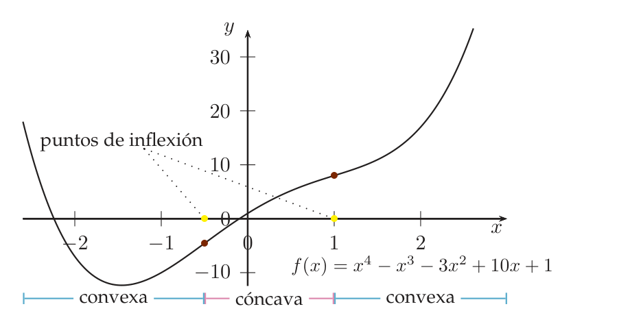
Inflexiones de $f(x)=\operatorname{tg}x$ y $g(x)=-x^5$ en $(-\tfrac\pi2,\tfrac\pi2)$.
- $f=\operatorname{tg}x$. $f'(x)=\frac1{\cos^2x}$, $f''(x)=\frac{2\operatorname{sen}x}{\cos^3x}$. El coseno no se anula en el intervalo: $f''=0\iff\operatorname{sen}x=0\iff x=0$.
- $f'''(0)=2>0$ (primera derivada no nula: la 3.ª, orden impar, positiva): en $0$ pasa de cóncava a convexa (Prop. 3.12).
- $g=-x^5$. $g''(x)=-20x^3$, $g'''(x)=-60x^2$, $g'''(0)=0$, $g^{(4)}(0)=0$, $g^{(5)}=-120$. La primera no nula es la 5.ª (orden impar) y es negativa: en $0$ pasa de convexa a cóncava.
Tres casos delicados P
| Situación | ¿Inflexión? | Ejemplo |
|---|---|---|
| $f''(c)=0$ pero $f''$ no cambia de signo | No | $x^4$ en $0$ ($f''=12x^2\ge0$): convexa en todo $\mathbb R$ (X 2018, Propio 2) |
| $f''(c)$ no existe, $c$ está en el dominio, $f$ es continua en $c$ y $f''$ cambia de signo | Sí | $x|x-4|$ en $4$ (E 3.40); la función a trozos de E 3.48 (y de X10) en $0$ |
| $f''$ cambia de signo en $c$ pero $c$ no está en el dominio (asíntota vertical) | No | $\frac1{1-x}$ en $1$ (E 3.43); $\frac{x^2}{x-1}$ (E 3.46); $\frac{x^2}{x+1}$ (X 2016) |
Fíjate en que la Prop. 3.11 de U supone $f$ dos veces derivable; en el segundo caso no se aplica (Larson enuncia su teorema con «$f''(c)=0$ o $f''$ no existe en $c$»).
Con $f'(c)=0$: $f''(c)>0$ da mínimo (sonrisa) y $f''(c)<0$ máximo (cara triste): es la Prop. 3.7 de U (p. 131), que ahora entiendes geométricamente. Pero en un punto de inflexión ocurre lo contrario: $f''$ cambia de signo, así que, si $f$ es derivable en $c$ y $f'(c)=0$, no hay extremo sino un punto de silla (como $x^3$ en $0$). Un punto puede ser a la vez crítico e inflexión (E 3.36, 3.42), pero cada concepto se comprueba con su criterio: extremo con $f'$, inflexión con $f''$.
U p.131| Te dan la gráfica de… | Para la concavidad de $f$ mira… |
|---|---|
| $f''$ | encima del eje ($f''>0$): convexa. Debajo: cóncava. Cada cruce con el eje: inflexión (X 2011, 2014, 2017). |
| $f'$ | donde la gráfica de $f'$ sube: $f$ convexa; donde baja: cóncava. Cada punto donde $f'$ crece a un lado y decrece al otro (un máximo o un mínimo de $f'$) es una inflexión de $f$ (E 3.36, 3.42). |
| $f$ | forma $\cup$ o $\cap$; la inflexión es donde cambia (U Fig. 3.6). |
Error clásico: confundir los cortes de $f'$ con el eje (críticos de $f$) con los extremos de $f'$ (inflexiones de $f$).
P- «$f''(c)=0\Rightarrow$ inflexión». Es la afirmación 10 de la autoevaluación de U (p. 140), que es falsa ($x^4$ en $0$).
- Buscar inflexiones con $f'=0$.
- Anotar «inflexión» en un punto que no está en el dominio (asíntota vertical).
- Descartar una inflexión porque «no existe $f''(c)$», cuando es un cambio de forma en un punto del dominio (E 3.40).
- Olvidar alguna raíz de $f''$ (X 2013, X Electrónica con $k=3$).
4Asíntotas y estudio completo de una gráfica U pp.48-50, 139
Una asíntota es una recta a la que la gráfica se acerca tanto como quieras sin llegar (necesariamente) a tocarla: el «raíl» sobre el que viaja la curva cuando $x$ se va a $\pm\infty$ o cuando se acerca a un punto prohibido. U lo resume en una lista: «conociendo el dominio, los puntos de continuidad y discontinuidad, las asíntotas, los intervalos de crecimiento y decrecimiento, los extremos relativos, los intervalos de concavidad y convexidad y los puntos de inflexión es sencillo realizar representaciones gráficas aproximadas de funciones.»
U p.139Repaso de asíntotas U pp.48-50
| Tipo | Condición | Cómo se busca |
|---|---|---|
| Vertical $x=a$ | $\lim_{x\to a^\pm}f(x)=\pm\infty$ (al menos por un lado) | en los puntos fuera del dominio o en sus bordes (ceros del denominador, extremo del dominio de un logaritmo…): límites laterales |
| Horizontal $y=b$ | $\lim_{x\to+\infty}f(x)=b$ o $\lim_{x\to-\infty}f(x)=b$ | los dos límites por separado |
| Oblicua $y=mx+b$, $m\neq0$ | $\lim_{x\to\pm\infty}[f(x)-(mx+b)]=0$ | $m=\lim_{x\to\pm\infty}\frac{f(x)}{x}$ (Prop. 1.12) y después $b=\lim_{x\to\pm\infty}[f(x)-mx]$; deben existir y ser finitos |
Que exista $m=\lim_{x\to\pm\infty}f(x)/x$ no basta: $f(x)=x+\operatorname{sen}x$ tiene $m=1$ pero no tiene asíntota (el límite de $f(x)-x=\operatorname{sen}x$ no existe). Hay que calcular también $b$. Una función con asíntota horizontal en un lado no tiene oblicua en ese lado (las dos son el mismo «raíl»).
U p.49- Dominio y puntos de discontinuidad. Simetría ($f$ par o impar: basta estudiar $x\ge0$).
- Cortes con los ejes: $f(0)$ y $f(x)=0$.
- Asíntotas: verticales (en puntos fuera del dominio o en sus bordes), horizontales y oblicuas.
- $f'$ factorizada: signo → intervalos de crecimiento y decrecimiento; críticos → extremos relativos (con $f'$ o con $f''$, como en 3.4).
- $f''$ factorizada: signo → convexa/cóncava; cambios de signo en puntos del dominio → inflexiones.
- Una sola tabla con todos los puntos especiales ordenados (críticos, ceros de $f''$, asíntotas verticales) y una fila por cada propiedad.
- Dibujo: ejes, asíntotas (a trazos), puntos especiales, y unir cada tramo con la forma que dicen las flechas ($\nearrow\searrow$) y la curvatura ($\cup\cap$).
No se parte de una fórmula, sino de propiedades. Elige una función «modelo» que ya tenga la forma pedida ($-x^2$, $x^3$, $\operatorname{arctg}x$, $\ln(x+a)$…), trasládala o cámbiale el signo, y si necesitas una asíntota oblicua suma una recta en un lado: la recta no cambia $f''$ (su segunda derivada es $0$), pero sí cambia $f'$, así que hay que volver a comprobar el crecimiento. Después, comprueba cada propiedad con $f'$ y $f''$.
P5Ejercicios del libro, resueltos E pp.114-134
Orden de estudio recomendado (de fácil a difícil): 3.39 → 3.30 → 3.43 → 3.40 → 3.36 → 3.42 → 3.45 → 3.41 → 3.47 → 3.48 → 3.46. Los ejercicios 3.30 y 3.36 son de 3.4 (extremos) y aquí solo se completa su parte de inflexión o de $f''$.
Ejercicio 3.39 · $f(x)=3x^5-5x^4-20x^3+2x-1$: ¿cuándo es cóncava y cuándo convexa? E pp.122-123
Sea $f(x)=3x^5-5x^4-20x^3+2x-1$. ¿Cuándo es cóncava y cuándo convexa?
- Qué me piden
- Los intervalos donde $f(x)=3x^5-5x^4-20x^3+2x-1$ es cóncava y donde es convexa.
- Cómo lo pienso
- La curvatura la decide el signo de $f''$: donde es positiva la gráfica es una sonrisa (convexa) y donde es negativa una cara triste (cóncava). Un producto solo cambia de signo en sus raíces, así que basta factorizar $f''$ y probar un punto por intervalo.
- Qué uso
- Prop. 3.10 de U (p. 136): $f''\ge0\Rightarrow$ convexa, $f''\le0\Rightarrow$ cóncava.
- Por dónde empiezo
- Derivar dos veces y sacar factor común en $f''$.
- ¿Se puede usar la Prop. 3.10? $f$ es un polinomio: dos veces derivable en todo $\mathbb R$. Sí.
- Derivar dos veces. $f'(x)=15x^4-20x^3-60x^2+2$ y $f''(x)=60x^3-60x^2-120x$.
- Factorizar $f''$. Factor común $60x$: $f''(x)=60x(x^2-x-2)$. Las raíces de $x^2-x-2$ son $x=\frac{1\pm\sqrt{1+8}}2=2,\,-1$, así que $f''(x)=60\,x\,(x-2)(x+1)$. Por qué factorizar: un producto solo puede cambiar de signo donde se anula algún factor; entre dos raíces consecutivas $f''$ conserva su signo.
- Tabla de signos (basta probar con un punto de cada intervalo: $-2$, $-\tfrac12$, $1$, $3$):
intervalo $x+1$ $x$ $x-2$ $f''$ $f$ $(-\infty,-1)$ $-$ $-$ $-$ $-$ cóncava $(-1,0)$ $+$ $-$ $-$ $+$ convexa $(0,2)$ $+$ $+$ $-$ $-$ cóncava $(2,\infty)$ $+$ $+$ $+$ $+$ convexa - Conclusión (Prop. 3.10). $f$ es convexa en $[-1,0]$ y en $[2,\infty)$ y cóncava en $(-\infty,-1]$ y en $[0,2]$. (Se pueden cerrar porque en los extremos $f''=0$ cumple a la vez $\ge0$ y $\le0$.)
- Extra (no se pide): inflexiones. $f''$ cambia de signo en $-1$, $0$ y $2$: tres puntos de inflexión $(-1,9)$, $(0,-1)$, $(2,-141)$. Con la Prop. 3.12: $f'''(x)=180x^2-120x-120$, $f'''(-1)=180>0$ (cóncava $\to$ convexa), $f'''(0)=-120<0$ (convexa $\to$ cóncava), $f'''(2)=360>0$ (cóncava $\to$ convexa).
«$f''(x)=60x(x-2)(x+1)$. Signo de $f''$: $-$ en $(-\infty,-1)$, $+$ en $(-1,0)$, $-$ en $(0,2)$, $+$ en $(2,\infty)$. Por la Prop. 3.10, $f$ es convexa en $[-1,0]$ y en $[2,\infty)$, y cóncava en $(-\infty,-1]$ y en $[0,2]$.»
Estudiar el signo de $f'$ en vez del de $f''$ (eso da crecimiento, no curvatura); o escribir «convexa en $[-1,0]\cup[2,\infty)$».
Ejercicio 3.30 (parte de inflexión) · cúbica $ax^3+bx^2+cx+d$ E p.114
Sea $f(x)=ax^3+bx^2+cx+d$ con $a\ne0$. ¿Es cierto que $f$ tiene exactamente un máximo local y un mínimo local en su dominio, cualesquiera que sean $a,b,c,d$?
- Qué me piden
- Completar el Ejercicio 3.30: cuántos puntos de inflexión tiene una cúbica $ax^3+bx^2+cx+d$ y dónde están.
- Cómo lo pienso
- Toda cúbica tiene $f''$ de grado 1, una recta con pendiente no nula: se anula una sola vez y allí cambia de signo. Por tanto hay exactamente una inflexión, aunque la cúbica no tenga máximo ni mínimo.
- Qué uso
- Prop. 3.11 y 3.12 de U (p. 137): candidatos con $f''=0$; inflexión si $f''$ cambia de signo (o primera derivada no nula de orden impar).
- Por dónde empiezo
- Calcular $f''(x)=6ax+2b$ y resolver $f''=0$.
La parte de extremos está en el tema 3.4 (respuesta: no; contraejemplos $2x^3+6x$, sin puntos críticos, y $x^3$, con un punto crítico que no es extremo). Aquí se completa lo que toca a 3.5.
- $f''(x)=6ax+2b$: una recta con pendiente $6a\neq0$. Se anula en un solo punto, $x_0=-\frac b{3a}$, y cambia de signo allí.
- Por la Def. 3.10 (o por la Prop. 3.12: $f'''=6a\neq0$, orden 3, impar), $x_0$ es el único punto de inflexión. Si $a>0$, pasa de cóncava a convexa; si $a<0$, al revés.
- En $f=x^3$: $x_0=0$ y $f'(0)=0$, inflexión con tangente horizontal (y no es extremo). En $f=2x^3+6x$: $x_0=0$ pero $f'(0)=6\neq0$: inflexión con tangente inclinada.
Ejercicio 3.43 · $f(x)=\dfrac1{1-x}$: extremos e inflexión E pp.125-126
Sea $f(x)=\dfrac1{1-x}$. ¿Alcanza extremos relativos? ¿Tiene algún punto de inflexión?
- Qué me piden
- Decidir si $f(x)=\frac1{1-x}$ tiene extremos relativos y puntos de inflexión.
- Cómo lo pienso
- La curvatura cambia de lado a lado de $x=1$, pero ahí la función no existe: es una asíntota vertical. Un punto de inflexión tiene que ser un punto de la gráfica, así que ese cambio no cuenta.
- Qué uso
- Def. 3.10 y Prop. 3.11 de U (p. 137); puntos críticos (U p. 131); asíntota vertical (U p. 49).
- Por dónde empiezo
- Escribir el dominio, $\mathbb R\setminus\{1\}$, y calcular $f'$ y $f''$.
- Dominio. $\mathbb R\setminus\{1\}$. Ahí $f$ es derivable las veces que haga falta.
- Extremos. $f'(x)=\frac1{(1-x)^2}>0$ en todo el dominio: nunca vale $0$ y no hay puntos de no derivabilidad dentro del dominio. No hay puntos críticos ni extremos relativos (U p. 131).
- Concavidad. $f''(x)=\frac2{(1-x)^3}$. Si $x<1$, $1-x>0$ y $f''>0$: convexa en $(-\infty,1)$. Si $x>1$, $1-x<0$ y $f''<0$: cóncava en $(1,\infty)$.
- ¿Inflexión? Un punto de inflexión es un punto de la gráfica donde cambia la curvatura (Def. 3.10). El cambio ocurre «a través» de $x=1$, pero $f(1)$ no existe. Y $f''$ no se anula en ningún punto del dominio, así que la Prop. 3.11 no da otro candidato. No tiene puntos de inflexión.
- Asíntota. $\lim_{x\to1^-}f(x)=+\infty$ y $\lim_{x\to1^+}f(x)=-\infty$: $x=1$ es asíntota vertical.
«$f'(x)=1/(1-x)^2>0$: sin puntos críticos, sin extremos. $f''(x)=2/(1-x)^3$ no se anula; cambia de signo en $x=1$, pero $1\notin\operatorname{Dom}f$ (asíntota vertical). No hay puntos de inflexión.»
Ver el cambio de signo de $f''$ en la tabla y anotar «inflexión en $x=1$».
Ejercicio 3.40 · $f(x)=x\,|x-4|$ E p.123
Sea $f(x)=x\,|x-4|$. Es cierto que: a) es cóncava en $(4,+\infty)$; b) es convexa en $(-4,4)$; c) en $x=4$ tiene un punto de inflexión; d) ninguna de las anteriores.
- Qué me piden
- Decidir cuál de las afirmaciones a), b), c), d) sobre $f(x)=x\,|x-4|$ es cierta.
- Cómo lo pienso
- Sin el valor absoluto, $f$ es una parábola «hacia abajo» a la izquierda de $4$ y otra «hacia arriba» a la derecha: en $x=4$ cambia la curvatura, aunque allí no exista la derivada.
- Qué uso
- Prop. 3.10 de U (p. 136) en cada trozo; Def. 3.10 (p. 137) para la inflexión en el punto de unión.
- Por dónde empiezo
- Escribir $f$ a trozos quitando el valor absoluto.
- Quitar el valor absoluto. Si $x<4$, $|x-4|=4-x$ y $f(x)=-x^2+4x$. Si $x\ge4$, $f(x)=x^2-4x$.
- Derivadas fuera de $4$. $x<4$: $f'=-2x+4$, $f''=-2<0$. $x>4$: $f'=2x-4$, $f''=2>0$.
- Curvatura (Prop. 3.10). Cóncava en $(-\infty,4)$ y convexa en $(4,\infty)$.
- Descartar a) y b). a): en $(4,\infty)$ es convexa, no cóncava. b): $(-4,4)\subset(-\infty,4)$, donde $f''=-2<0$: es cóncava, no convexa.
- c) ¿Inflexión en $4$? $f$ es continua en $4$ ($f(4)=0$ y ambos trozos tienden a $0$), $4$ está en el dominio y $f$ es cóncava a su izquierda y convexa a su derecha. Por la Def. 3.10, sí.
- ¿Contradice la Prop. 3.11? No: $f$ no es derivable en $4$ ($f'(4^-)=-4$, $f'(4^+)=4$) y esa proposición no se aplica. Es una inflexión donde $f''$ no existe.
- Respuesta: c).
Descartar c) porque «$f''(4)$ no existe».
Ejercicio 3.36 (apartado c) · $f''(x)=0$ a partir de la gráfica de $f'$ E p.120
La gráfica de la derivada de una función dos veces derivable $f$ con dominio todo $\mathbb R$ aparece en la figura. Razona si alguna de las afirmaciones es correcta: a) $f$ tiene dos puntos críticos, pero un solo extremo relativo. b) $f$ tiene dos extremos relativos. c) La ecuación $f''(x)=0$ no tiene soluciones reales.
- Qué me piden
- Razonar si la ecuación $f''(x)=0$ puede no tener soluciones reales, a partir de la gráfica de $f'$ (apartado c).
- Cómo lo pienso
- $f''$ es la derivada de $f'$: vale $0$ donde la gráfica de $f'$ tiene tangente horizontal, es decir, en sus picos y sus valles.
- Qué uso
- Prop. 3.6 de U (p. 131) aplicada a $f'$: en un extremo relativo interior de una función derivable, la derivada vale $0$. Prop. 3.9 (p. 136) para el extra.
- Por dónde empiezo
- Localizar en la figura los máximos y mínimos relativos de $f'$.
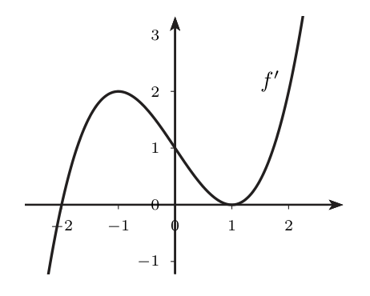
- $f$ es dos veces derivable: $f'$ es derivable y $f''=(f')'$.
- En la figura, $f'$ tiene un máximo relativo en $x=-1$ (altura $2$) y un mínimo relativo en $x=1$ (altura $0$). En un extremo relativo interior de una función derivable, su derivada vale $0$ (U Prop. 3.6, aplicada a $f'$): $f''(-1)=0$ y $f''(1)=0$.
- c) es falsa: $f''(x)=0$ tiene al menos dos soluciones reales. (Las afirmaciones a) y b) se tratan en el tema 3.4.)
- Extra (3.5): $f'$ crece en $(-\infty,-1)$, decrece en $(-1,1)$ y crece en $(1,\infty)$. Por la Prop. 3.9, $f$ es convexa en $(-\infty,-1]$, cóncava en $[-1,1]$ y convexa en $[1,\infty)$; $x=-1$ y $x=1$ son puntos de inflexión. Fíjate: $x=1$ es a la vez punto crítico ($f'(1)=0$) e inflexión: el «punto de silla» de a).
Buscar los ceros de $f''$ donde $f'$ corta al eje (esos son los ceros de $f'$).
Ejercicio 3.42 · leer la concavidad en la gráfica de $f'$ E p.125
De $f:\mathbb R\to\mathbb R$ tres veces derivable conocemos la gráfica de $f'$ (figura). Razona si son correctas: a) $f$ es cóncava en $(-\infty,0)$. b) $f$ es convexa en $(-\infty,0)$. c) $f$ tiene un punto de inflexión en $x=1$.
- Qué me piden
- Decidir, a partir de la gráfica de $f'$, si $f$ es cóncava o convexa en $(-\infty,0)$ y si tiene una inflexión en $x=1$.
- Cómo lo pienso
- La gráfica es la de $f'$: donde $f'$ sube, la pendiente de $f$ aumenta y $f$ es una sonrisa (convexa); donde baja, es cara triste (cóncava). Una inflexión es un punto donde $f'$ pasa de subir a bajar o al revés.
- Qué uso
- Prop. 3.9 de U (p. 136): $f$ derivable es convexa $\Leftrightarrow f'$ creciente, cóncava $\Leftrightarrow f'$ decreciente. Def. 3.10 (p. 137).
- Por dónde empiezo
- Anotar en la figura los tramos donde $f'$ crece y donde decrece.
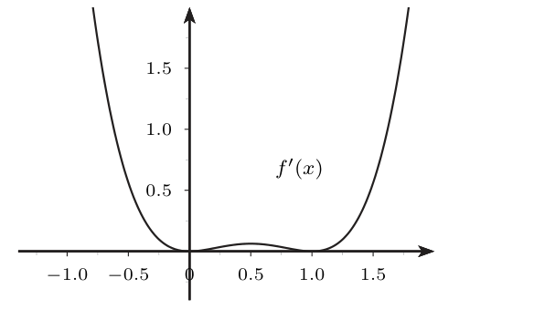
- Tramos de $f'$ (lectura de la figura): decreciente en $(-\infty,0]$, creciente en $[0;0{,}5]$, decreciente en $[0{,}5;1]$, creciente en $[1,\infty)$.
- a) y b). $f$ es derivable y $f'$ es decreciente en $(-\infty,0)$: $f$ es cóncava en $(-\infty,0)$ (Prop. 3.9). a) correcta, b) falsa.
- c). En $(0{,}5;1)$ $f'$ decrece: $f$ cóncava; en $(1,\infty)$ $f'$ crece: $f$ convexa. Hay cambio de curvatura en $x=1$, que está en el dominio: inflexión en $x=1$ (Def. 3.10). c) correcta.
- Extra. Igual ocurre en $x=0$ (cóncava $\to$ convexa) y $x=0{,}5$ (convexa $\to$ cóncava). En los tres $f'$ crece a un lado y decrece al otro (son extremos de $f'$) y $f''=0$, como exige la Prop. 3.11. $x=0$ y $x=1$ son además puntos críticos de $f$ que no son extremos ($f'\ge0$: $f$ crece a ambos lados).
Mirar el signo de $f'$ ($f'\ge0$ siempre) y concluir algo de la curvatura: el signo de $f'$ da el crecimiento de $f$; la curvatura la da la monotonía de $f'$.
Ejercicio 3.45 · ¿es convexa en todo $\mathbb R$? E pp.127-128
Sea $f:\mathbb R\to\mathbb R$ dos veces derivable con continuidad en $\mathbb R\setminus\{1\}$. Su derivada se representa en la figura. A partir de la gráfica de $f'$, ¿cuáles son los intervalos de concavidad y convexidad de $f$? ¿Tiene puntos de inflexión? ¿Es convexa en $\mathbb R$?
- Qué me piden
- Dar los intervalos de concavidad y convexidad de $f$ y sus inflexiones a partir de la gráfica de $f'$, y decidir si $f$ es convexa en todo $\mathbb R$.
- Cómo lo pienso
- $f'$ sube a cada lado de $x=1$, así que $f$ es convexa a cada lado; pero al cruzar $x=1$ la pendiente pasa de «muy positiva» a «muy negativa», lo que dibuja un pico $\wedge$: no puede ser convexa en todo $\mathbb R$.
- Qué uso
- Prop. 3.9 de U (p. 136); Def. 3.8 (p. 135) de convexa; teorema del valor medio (U p. 96) para relacionar la cuerda con la derivada.
- Por dónde empiezo
- Leer en la figura si $f'$ crece o decrece en $(-\infty,1)$ y en $(1,\infty)$.
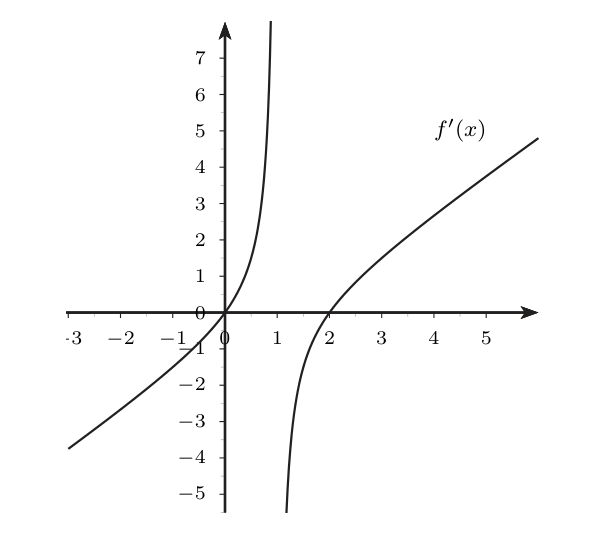
- Intervalos. En $(-\infty,1)$, $f$ es derivable y $f'$ es creciente: convexa en $(-\infty,1)$ (Prop. 3.9). Igual en $(1,\infty)$: convexa en $(1,\infty)$. No es cóncava en ningún intervalo, porque $f'$ no decrece en ningún tramo.
- Inflexiones. No hay: a ambos lados de cualquier punto $f$ es convexa, nunca pasa a cóncava (Def. 3.10).
- ¿Convexa en $\mathbb R$? No. Intuición: justo antes de $1$ la gráfica sube con pendiente enorme y justo después baja con pendiente enorme: cerca de $1$ tiene forma de $\cap$.
- Un ejemplo numérico primero. En una sonrisa las cuerdas se van «empinando» de izquierda a derecha (pendientes crecientes; se obtiene de la Def. 3.8 escribiendo $q=(1-t)p+tr$). Con $f=x^2$: la cuerda de $[0,1]$ tiene pendiente $\frac{1-0}{1}=1$, la de $[1,2]$ tiene $\frac{4-1}{1}=3$ y la de $[2,3]$ tiene $\frac{9-4}{1}=5$: $1<3<5$. Si $f$ fuese convexa, con cuatro puntos $0{,}5<0{,}6<1{,}2<1{,}3$ habría que tener $$\text{pend. de }[0{,}5;0{,}6]\ \le\ \text{pend. de }[0{,}6;1{,}2]\ \le\ \text{pend. de }[1{,}2;1{,}3].$$
- Qué valen las pendientes de los extremos. $f$ es derivable en $[0{,}5;0{,}6]$ y en $[1{,}2;1{,}3]$ (no contienen a $1$), y el teorema del valor medio (U p. 96) dice que la pendiente de la cuerda es $f'(\xi)$ con $\xi\in(0{,}5;0{,}6)$, y la última es $f'(\eta)$ con $\eta\in(1{,}2;1{,}3)$. En la figura, $f'>0$ en $(0,1)$ y $f'<0$ en $(1,2)$: queda «número positivo $\le$ número negativo». Gráficamente: una cuerda que sube con fuerza antes de $1$ y otra que baja después de $1$ no pueden ir «empinándose». Contradicción: $f$ no es convexa en $\mathbb R$, sea o no continua en $1$.
Unir los intervalos: «convexa en $(-\infty,1)$ y en $(1,\infty)$, luego convexa en $\mathbb R$».
Ejercicio 3.41 · $\sqrt{|x|}$ no es cóncava en $\mathbb R$ E pp.123-124
La función $f(x)=\sqrt{|x|}$ es continua en $\mathbb R$ y tiene derivada segunda negativa en $\mathbb R\setminus\{0\}$. Muestra que no es cóncava en $\mathbb R$.
- Qué me piden
- Probar que $f(x)=\sqrt{|x|}$ no es cóncava en $\mathbb R$, aunque $f''<0$ fuera de $0$.
- Cómo lo pienso
- Para probar que algo no es cóncavo basta un solo contraejemplo a la definición: una cuerda que quede por encima de la gráfica. Hay que buscarla a ambos lados del punto problemático $x=0$.
- Qué uso
- Def. 3.9 de U (p. 135) de cóncava; Prop. 3.10 (p. 136), que exige $f$ dos veces derivable en todo el intervalo y aquí no se cumple.
- Por dónde empiezo
- Escoger dos puntos a lados opuestos de $0$, por ejemplo $a=-1$ y $b=1$.
- Por qué no sirve la Prop. 3.10. Si $x>0$, $f''(x)=-\frac1{4x^{3/2}}<0$; si $x<0$, $f''(x)=-\frac1{4(-x)^{3/2}}<0$. Pero en $0$ no existe ni $f'$ (la gráfica tiene un pico) y la Prop. 3.10 exige $f$ dos veces derivable en todo el intervalo. No se puede concluir «cóncava en $\mathbb R$».
- Qué hay que contradecir. Cóncava en $\mathbb R$ significa (Def. 3.9) $f((1-t)a+tb)\ge(1-t)f(a)+tf(b)$ para todo $a,b$ y $t\in[0,1]$ (gráfica por encima de la cuerda).
- Elegir $a$ y $b$ a lados opuestos de $0$ (si no, el intervalo no contiene a $0$ y ahí sí hay concavidad). Tomamos $a=-1$, $b=1$: $f(-1)=f(1)=1$ y la cuerda es el segmento horizontal de altura $1$.
- Punto medio ($t=\tfrac12$). $(1-t)a+tb=0$ y $f(0)=0$. La cuerda en ese punto vale $\tfrac12\cdot1+\tfrac12\cdot1=1$. Como $0<1$, la gráfica queda por debajo de la cuerda: falla la desigualdad de concavidad.
- Conclusión. $f$ no es cóncava en $\mathbb R$. Sí lo es en $(-\infty,0]$ y en $[0,\infty)$ por separado: la concavidad no se conserva al unir intervalos.
«$f''<0$ en todos los puntos donde existe, luego es cóncava». Falla en cuanto hay en el intervalo un punto sin $f''$.
Ejercicio 3.47 · inventar funciones con propiedades dadas E pp.131-133
Da una expresión, si es posible, que defina una función real de una variable real con las propiedades indicadas: a) derivable en su dominio, creciente en $(-\infty,2)$ y decreciente en $(2,+\infty)$; b) derivable, estrictamente creciente en $(-\infty,2)$ y estrictamente decreciente en $(2,+\infty)$; c) derivable, convexa en $(-\infty,0)$ y cóncava en $(0,+\infty)$; d) derivable en su dominio y con asíntota vertical $x=-\pi$; e) positiva en $(-\infty,1)$, con gráfica que corta al eje $x$ en $(2,0)$ y al eje $y$ en $(0,-3)$.
- Qué me piden
- Dar, si se puede, una función con cada grupo de propiedades a)-e) del enunciado.
- Cómo lo pienso
- Se parte de una función «modelo» que ya conoces ($-x^2$, $x^3$, $\ln x$, ...), se traslada o se le cambia el signo y se comprueba derivando. Si dos condiciones se contradicen, no existe.
- Qué uso
- Def. 2.5 y Prop. 2.4 de U (p. 98) para la monotonía; Prop. 3.10 (p. 136) para la curvatura; asíntota vertical (U p. 49).
- Por dónde empiezo
- Para cada apartado, elegir un modelo y decidir si hace falta trasladarlo o cambiarle el signo.
- a) $f(x)=\pi$ (o cualquier constante). Es derivable y, con la Def. 2.5 de U (no estricta), una constante es a la vez creciente y decreciente en cualquier intervalo ($a<b\Rightarrow f(a)\le f(b)$ y $f(b)\le f(a)$). También sirve la de b).
- b) $f(x)=-(x-2)^2$. $f'(x)=-2(x-2)$: $>0$ si $x<2$ y $<0$ si $x>2$: estrictamente creciente en $(-\infty,2)$ y estrictamente decreciente en $(2,\infty)$ (Prop. 2.4). Es $-x^2$ con el vértice trasladado a $x=2$.
- c) $f(x)=-x^3$. $f''(x)=-6x$: $>0$ si $x<0$ (convexa) y $<0$ si $x>0$ (cóncava). También vale $\operatorname{arctg}x$ ($f''=\frac{-2x}{(1+x^2)^2}$, mismos signos). Con la Def. 3.8 (que usa $\le$), la recta $f(x)=x$ o la constante $\pi$ cumplen la condición solo en sentido débil (son convexas y cóncavas a la vez). No vale $\operatorname{tg}x$: no está definida en $-\frac\pi2$, $-\frac{3\pi}2,\dots$, así que no tiene sentido «convexa en $(-\infty,0)$», y además en $(-\frac\pi2,0)$ es cóncava ($f''=\frac{2\operatorname{sen}x}{\cos^3x}<0$), al revés de lo pedido.
- d) $f(x)=\ln(x+\pi)$ (dominio $(-\pi,\infty)$, $\lim_{x\to-\pi^+}f(x)=-\infty$) o $f(x)=\dfrac1{x+\pi}$. Ambas derivables en su dominio y con asíntota vertical en $x=-\pi$.
- e) No existe. $0\in(-\infty,1)$: «positiva en $(-\infty,1)$» exige $f(0)>0$; pero «corta al eje $y$ en $(0,-3)$» dice $f(0)=-3<0$. Contradicción.
Dar $\operatorname{tg}x$ en c) sin mirar su dominio ni el signo de $f''$.
Ejercicio 3.48 · decreciente, cóncava, convexa y dos asíntotas E pp.133-134
Dibuja la gráfica de una función continua que sea decreciente en todo $\mathbb R$, cóncava en $(-\infty,0)$, convexa en $(0,+\infty)$ y tenga dos asíntotas (una horizontal y una oblicua).
- Qué me piden
- Dibujar una función continua, decreciente en $\mathbb R$, cóncava en $(-\infty,0)$, convexa en $(0,\infty)$ y con una asíntota horizontal y otra oblicua.
- Cómo lo pienso
- $-\operatorname{arctg}x$ ya baja, es cóncava a la izquierda y convexa a la derecha y tiene asíntotas horizontales. Para conseguir una oblicua a la derecha se le suma una recta de pendiente negativa solo para $x>0$: una recta no cambia $f''$.
- Qué uso
- Asíntotas (U Prop. 1.12, p. 49); Prop. 3.10 (p. 136) y Def. 3.10 (p. 137); monotonía con Prop. 2.4 (U p. 98).
- Por dónde empiezo
- Proponer la función a trozos $-\operatorname{arctg}x$ para $x\le0$ y $-\tfrac x2-\operatorname{arctg}x$ para $x>0$, y comprobar la continuidad en $0$.
- Propuesta (E): $f(x)=\begin{cases}-\operatorname{arctg}x,&x\le0,\\[2pt] -\tfrac x2-\operatorname{arctg}x,&x>0.\end{cases}$
- Continua. Cada trozo es continuo. En $0$: $f(0)=0$ y $\lim_{x\to0^+}\big(-\tfrac x2-\operatorname{arctg}x\big)=0$.
- Decreciente. $x<0$: $f'(x)=-\frac1{1+x^2}<0$. $x>0$: $f'(x)=-\frac12-\frac1{1+x^2}<0$. Cada trozo es estrictamente decreciente (Prop. 2.4) y, como $f$ es continua en $0$, lo es en todo $\mathbb R$.
- Curvatura. En ambos trozos $f''(x)=\dfrac{2x}{(1+x^2)^2}$ (la recta $-\tfrac x2$ tiene segunda derivada $0$). Si $x<0$, $f''<0$: cóncava en $(-\infty,0)$; si $x>0$, $f''>0$: convexa en $(0,\infty)$ (Prop. 3.10). Por la Def. 3.10, $x=0$ es inflexión aunque $f$ no sea derivable en $0$ ($f'(0^-)=-1$, $f'(0^+)=-\tfrac32$).
- Asíntota horizontal. $\lim_{x\to-\infty}f(x)=-(-\tfrac\pi2)=\tfrac\pi2$: $y=\tfrac\pi2$ (a la izquierda).
- Asíntota oblicua. $m=\lim_{x\to+\infty}\frac{f(x)}x=-\tfrac12$ y $b=\lim_{x\to+\infty}\big(f(x)+\tfrac x2\big)=\lim_{x\to+\infty}(-\operatorname{arctg}x)=-\tfrac\pi2$: $y=-\tfrac x2-\tfrac\pi2$ (a la derecha).
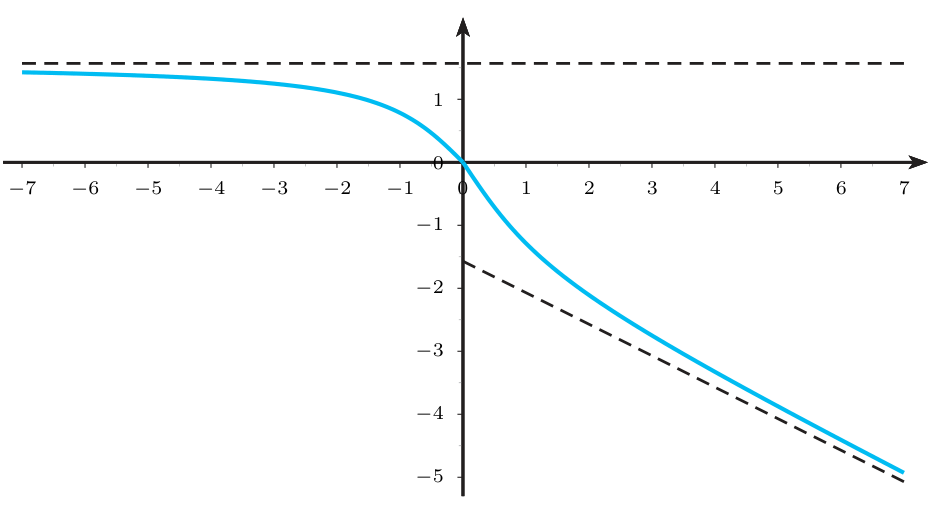
Sumar la recta con pendiente positiva ($+\tfrac x2$): se rompe «decreciente».
Ejercicio 3.46 · estudio completo de $f(x)=\dfrac{x^2}{x-1}$ E pp.128-131
Sea $f$ la función definida por $f(x)=\dfrac{x^2}{x-1}$. ¿Cuál es su representación gráfica?
- Qué me piden
- Hacer el estudio completo de $f(x)=\frac{x^2}{x-1}$ y dibujarla.
- Cómo lo pienso
- Se junta toda la información: dónde existe, dónde corta los ejes, hacia qué rectas se pega, dónde sube o baja y dónde es sonrisa o cara triste. Con eso el dibujo sale casi solo.
- Qué uso
- Lista de U (p. 139) para representar gráficas; asíntotas (U Prop. 1.12, p. 49); Prop. 2.4 (p. 98); Prop. 3.7 (p. 131); Prop. 3.10 (p. 136).
- Por dónde empiezo
- Dominio ($x\neq1$) y cortes con los ejes.
- Dominio. $x-1\neq0$: $\mathbb R\setminus\{1\}$. Ahí $f$ es cociente de polinomios con denominador no nulo: continua y derivable las veces que haga falta.
- Cortes. Eje $y$: $f(0)=0$. Eje $x$: $\frac{x^2}{x-1}=0\iff x=0$. Único corte: el origen.
- Asíntota vertical. $\lim_{x\to1^-}\frac{x^2}{x-1}=-\infty$ (numerador $\to1$, denominador $\to0^-$) y $\lim_{x\to1^+}\frac{x^2}{x-1}=+\infty$: $x=1$.
- Asíntota horizontal. $\lim_{x\to\pm\infty}f(x)=\pm\infty$: no hay.
- Asíntota oblicua. $m=\lim_{x\to\pm\infty}\frac{x^2}{x(x-1)}=1$ y $b=\lim_{x\to\pm\infty}\Big(\frac{x^2}{x-1}-x\Big)=\lim_{x\to\pm\infty}\frac x{x-1}=1$: $y=x+1$ en $\pm\infty$.
- Crecimiento. $f'(x)=\frac{2x(x-1)-x^2}{(x-1)^2}=\frac{x(x-2)}{(x-1)^2}$. El denominador es $>0$: el signo es el de $x(x-2)$. Creciente en $(-\infty,0)$ y $(2,\infty)$; decreciente en $(0,1)$ y $(1,2)$.
- Curvatura. $f''(x)=\frac{(2x-2)(x-1)^2-(x^2-2x)\cdot2(x-1)}{(x-1)^4}=\frac{2\big[(x-1)^2-(x^2-2x)\big]}{(x-1)^3}=\frac2{(x-1)^3}$ (el corchete vale $1$). $f''<0$ en $(-\infty,1)$: cóncava; $f''>0$ en $(1,\infty)$: convexa.
- Extremos. $f'=0\iff x=0$ o $x=2$. $f''(0)=-2<0$: máximo relativo en $(0,0)$; $f''(2)=2>0$: mínimo relativo en $(2,4)$. Ninguno es absoluto (la gráfica tiende a $\pm\infty$ junto a la asíntota).
- Inflexiones. $f''$ no se anula nunca y el cambio de curvatura es en $x=1$, fuera del dominio: no hay (igual que E 3.43).
- Dibujo. Rama izquierda: viene de abajo pegada a $y=x+1$, sube hasta el máximo $(0,0)$ y cae a $-\infty$ junto a $x=1$ (forma $\cap$). Rama derecha: baja desde $+\infty$ junto a $x=1$ hasta el mínimo $(2,4)$ y sube pegada a $y=x+1$ (forma $\cup$).
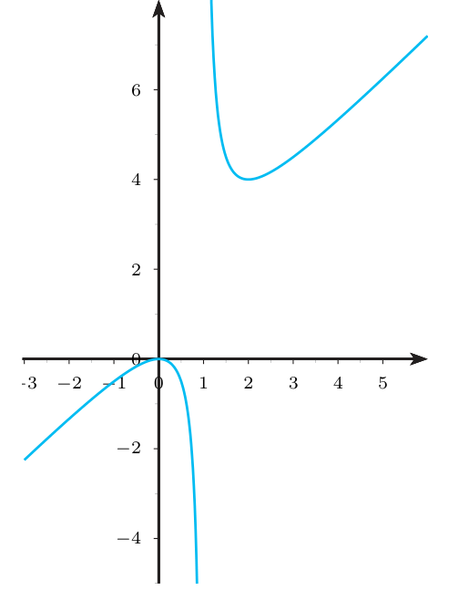
La tabla: dominio $\mathbb R\setminus\{1\}$; asíntotas $x=1$ e $y=x+1$; $f'=x(x-2)/(x-1)^2$ ($\nearrow$ en $(-\infty,0)$ y $(2,\infty)$; $\searrow$ en $(0,1)$ y $(1,2)$); máximo en $(0,0)$ y mínimo en $(2,4)$; $f''=2/(x-1)^3$ ($\cap$ en $(-\infty,1)$, $\cup$ en $(1,\infty)$); sin inflexiones; y el dibujo.
Olvidar el punto $x=1$ al partir los intervalos de las tablas de signos de $f'$ y $f''$ (hay que partir también en los puntos fuera del dominio).
6Ejemplos propios (de fácil a difícil) P
Propio 1 · $f(x)=\ln(1+x^2)$: curvatura e inflexiones P
Estudia la curvatura y los puntos de inflexión de $f(x)=\ln(1+x^2)$.
- Qué me piden
- La curvatura y los puntos de inflexión de $f(x)=\ln(1+x^2)$.
- Cómo lo pienso
- $f''$ es un cociente con denominador siempre positivo: el signo lo da solo el numerador $1-x^2$.
- Qué uso
- Prop. 3.10 y 3.12 de U (pp. 136-137).
- Por dónde empiezo
- Derivar dos veces con la regla del cociente.
- Dominio $\mathbb R$ ($1+x^2>0$). $f'(x)=\frac{2x}{1+x^2}$.
- $f''(x)=\frac{2(1+x^2)-2x\cdot2x}{(1+x^2)^2}=\frac{2(1-x^2)}{(1+x^2)^2}$.
- Signo de $1-x^2$: $>0$ en $(-1,1)$ y $<0$ si $|x|>1$. Convexa en $[-1,1]$; cóncava en $(-\infty,-1]$ y en $[1,\infty)$.
- Inflexiones en $x=\pm1$, puntos $(\pm1,\ln2)$. Control con la Prop. 3.12: $f'''(1)=-1<0$ (de convexa a cóncava).
Decir «cóncava en $(-\infty,-1)\cup(1,\infty)$» (unión).
Propio 2 · $f''(c)=0$ sin inflexión, y con inflexión P
(a) Estudia la curvatura de $f(x)=x^4-4x^3+6x^2+x$. (b) Lo mismo para $g(x)=x^5-5x^4+10x^3-10x^2$. ¿Hay inflexión en $x=1$ en cada una?
- Qué me piden
- Estudiar la curvatura de dos polinomios y decidir si hay inflexión en $x=1$ en cada uno.
- Cómo lo pienso
- $f''(c)=0$ es solo un candidato: lo que cuenta es si $f''$ cambia de signo. Un factor $(x-c)$ con exponente par no cambia el signo; con exponente impar, sí.
- Qué uso
- Prop. 3.11 (condición necesaria) y Prop. 3.12 (derivadas superiores) de U (p. 137).
- Por dónde empiezo
- Calcular $f''$ y factorizarla en potencias de $(x-1)$.
- (a) $f''(x)=12x^2-24x+12=12(x-1)^2\ge0$: convexa en $\mathbb R$. $f''(1)=0$, pero no cambia de signo: no hay inflexión. Con derivadas: $f'''(1)=0$ y $f^{(4)}(1)=24$ (orden 4, par): la Prop. 3.12 no da inflexión.
- (b) $g''(x)=20x^3-60x^2+60x-20=20(x-1)^3$: $<0$ si $x<1$ y $>0$ si $x>1$. Cóncava en $(-\infty,1]$, convexa en $[1,\infty)$; inflexión en $(1,-4)$. Con derivadas: $g''(1)=g'''(1)=g^{(4)}(1)=0$ y $g^{(5)}(1)=120>0$ (orden 5, impar, positiva): de cóncava a convexa.
«$f''(1)=0\Rightarrow$ inflexión»: es la afirmación 10 de la autoevaluación de U (p. 140), que es falsa.
Propio 3 · una desigualdad sacada de la concavidad P
Demuestra que $\operatorname{sen}x\ge\dfrac2\pi x$ para todo $x\in\big[0,\tfrac\pi2\big]$.
- Qué me piden
- Demostrar que $\operatorname{sen}x\ge\frac2\pi x$ en $[0,\tfrac\pi2]$.
- Cómo lo pienso
- Una función cóncava queda por encima de sus cuerdas; la recta $y=\frac2\pi x$ es justo la cuerda del seno entre $0$ y $\frac\pi2$.
- Qué uso
- Prop. 3.10 de U (p. 136) para ver que el seno es cóncavo ahí; Def. 3.9 (p. 135) de cóncava con $x=0$ e $y=\frac\pi2$.
- Por dónde empiezo
- Comprobar que $(\operatorname{sen}x)''=-\operatorname{sen}x\le0$ en $[0,\tfrac\pi2]$.
- Concavidad. $(\operatorname{sen}x)''=-\operatorname{sen}x\le0$ en $[0,\tfrac\pi2]$: el seno es cóncavo ahí (Prop. 3.10).
- Def. 3.9 con $x=0$, $y=\frac\pi2$: $\operatorname{sen}\big(t\tfrac\pi2\big)\ge(1-t)\operatorname{sen}0+t\operatorname{sen}\tfrac\pi2=t$ para todo $t\in[0,1]$.
- Cambio de nombre. Todo $x\in[0,\tfrac\pi2]$ se escribe $x=t\frac\pi2$ con $t=\frac{2x}\pi\in[0,1]$. Sustituyendo: $\operatorname{sen}x\ge\frac{2x}\pi$. $\blacksquare$
- Comprobación numérica: $x=\tfrac\pi6$: $\operatorname{sen}\tfrac\pi6=0{,}5\ge\tfrac13$.
- Variante: $\sqrt x$ es cóncava en $[0,\infty)$; con $t=\tfrac12$ en la Def. 3.9, $\dfrac{\sqrt a+\sqrt b}2\le\sqrt{\dfrac{a+b}2}$ para $a,b\ge0$ (p. ej. $a=3$, $b=11$: $2{,}524\le2{,}646$).
Usar la cuerda fuera del intervalo $[x,y]$: fuera de $[0,\tfrac\pi2]$ la desigualdad puede fallar ($x=\pi$: $\operatorname{sen}\pi=0<2$).
Propio 4 · estudio completo de $f(x)=\dfrac{x^3}{x^2-1}$ P
Representa $f(x)=\dfrac{x^3}{x^2-1}$.
- Qué me piden
- Representar $f(x)=\frac{x^3}{x^2-1}$.
- Cómo lo pienso
- Es impar, tiene dos asíntotas verticales, la oblicua $y=x$, dos extremos y una inflexión en el origen con tangente horizontal; la simetría ahorra la mitad del trabajo.
- Qué uso
- La receta del Ejercicio 3.46 (lista de U p. 139) más la simetría de las funciones impares.
- Por dónde empiezo
- Dominio, simetría y cortes con los ejes.
- Dominio: $\mathbb R\setminus\{-1,1\}$. Simetría: $f(-x)=-f(x)$ (impar). Corte: solo $(0,0)$.
- Asíntotas verticales: $x=1$ y $x=-1$ ($\lim_{x\to1^-}f=-\infty$, $\lim_{x\to1^+}f=+\infty$, $\lim_{x\to-1^-}f=-\infty$, $\lim_{x\to-1^+}f=+\infty$).
- Oblicua: $m=\lim_{x\to\pm\infty}\frac{x^3}{x(x^2-1)}=1$; $f(x)-x=\frac x{x^2-1}\to0$, así que $b=0$: $y=x$.
- Crecimiento: $f'(x)=\frac{3x^2(x^2-1)-x^3\cdot2x}{(x^2-1)^2}=\frac{x^2(x^2-3)}{(x^2-1)^2}$. Signo $=$ el de $x^2-3$ (salvo en $0$): creciente en $(-\infty,-\sqrt3]$ y $[\sqrt3,\infty)$; decreciente en $[-\sqrt3,-1)$, $(-1,1)$ y $(1,\sqrt3]$.
- Extremos: máximo relativo en $\big(-\sqrt3,-\tfrac{3\sqrt3}2\big)$ y mínimo relativo en $\big(\sqrt3,\tfrac{3\sqrt3}2\big)$. En $x=0$ ($f'(0)=0$) decrece a ambos lados: no es extremo.
- Curvatura: $f''(x)=\frac{2x(x^2+3)}{(x^2-1)^3}$. Como $x^2+3>0$, mandan los signos de $x$ y de $(x^2-1)^3$:
intervalo $x$ $(x^2-1)^3$ $f''$ $f$ $(-\infty,-1)$ $-$ $+$ $-$ cóncava $(-1,0)$ $-$ $-$ $+$ convexa $(0,1)$ $+$ $-$ $-$ cóncava $(1,\infty)$ $+$ $+$ $+$ convexa - Inflexión: solo en $x=0$ (los cambios en $\pm1$ son en asíntotas, fuera del dominio). $f'''(0)=-6<0$: de convexa a cóncava, y como $f'(0)=0$, la tangente es horizontal.
- Dibujo. Rama $x<-1$: sube por debajo de $y=x$ hasta el máximo en $-\sqrt3$ y cae a $-\infty$ junto a $x=-1$ ($\cap$). Rama central: baja desde $+\infty$ (junto a $x=-1$), pasa por el origen con tangente horizontal cambiando de $\cup$ a $\cap$, y baja a $-\infty$ junto a $x=1$. Rama $x>1$: simétrica de la primera respecto del origen.
Poner inflexiones en $x=\pm1$; o decir que $x=0$ es un extremo porque $f'(0)=0$.
7Así lo preguntan en el examen X
Estos 10 problemas de X son de este tema; los de lectura de gráfica y de «intervalos de concavidad y convexidad» son preguntas cortas de 1 punto. La mayoría son de Ingeniería Mecánica; X9 y X10 son de I. Electrónica Industrial y Automática (sin fecha); el temario de Cálculo es el mismo. Tipos de pregunta que no aparecen entre los de 3.5: justificar una desigualdad con la definición (pasa en E, no en X). Los apartados que dependen de otros temas van marcados: Taylor (de la sección 3.1) y punto fijo (de la sección 2.4) como bloque normal, y la integral (Tema 6, aún no estudiado) colapsada como «fuera de este tema».
X1 · leer la gráfica de $f''$ (parábola) X pp.16-17 (sep. 2011)
Sea $f:\mathbb R\to\mathbb R$ continua y derivable cinco veces cuya derivada segunda se representa en la figura. Determine sus puntos de inflexión y los intervalos de concavidad y convexidad. Razone la respuesta.
- Qué me piden
- Dar los puntos de inflexión y los intervalos de concavidad y convexidad de $f$ viendo la gráfica de $f''$.
- Cómo lo pienso
- La figura es la de $f''$, no la de $f$: sobre el eje horizontal $f$ es convexa, bajo el eje es cóncava, y los cruces con el eje son las inflexiones.
- Qué uso
- Prop. 3.10 de U (p. 136) y Def. 3.10 (p. 137).
- Por dónde empiezo
- Leer en la figura dónde $f''$ es positiva, dónde negativa y dónde corta el eje.
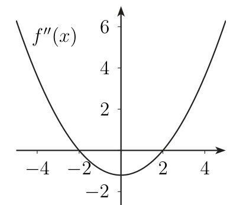
- $f''>0$ en $(-\infty,-2)$ y en $(2,\infty)$: convexa ahí (Prop. 3.10).
- $f''<0$ en $(-2,2)$: cóncava ahí.
- $f''$ cambia de signo en $x=-2$ y en $x=2$: puntos de inflexión $x=-2$ y $x=2$ (Def. 3.10).
«Como $f''>0$ en $(-\infty,-2)$ y $(2,\infty)$, $f$ es convexa en cada uno de ellos; como $f''<0$ en $(-2,2)$, es cóncava. $f''$ cambia de signo en $x=\pm2$, que son los puntos de inflexión.»
X2 · gráfica de $f''$ con tres ceros (cúbica) X p.43 (feb. 2014)
Sea $f:[-2,2]\to\mathbb R$ continua y dos veces derivable con continuidad. Su derivada segunda se representa en la figura. Determine los intervalos de concavidad, de convexidad y sus puntos de inflexión. Razone la respuesta.
- Qué me piden
- Dar los intervalos de concavidad, convexidad y las inflexiones de $f$ viendo la gráfica de $f''$ en $[-2,2]$.
- Cómo lo pienso
- Igual que X1: los ceros de $f''$ son $-1$, $0$ y $1$; entre ellos se lee el signo de la gráfica. Hay que respetar que el dominio es $[-2,2]$.
- Qué uso
- Prop. 3.10 de U (p. 136) y Def. 3.10 (p. 137).
- Por dónde empiezo
- Marcar en la figura los tres cortes con el eje y el signo de $f''$ en cada tramo.
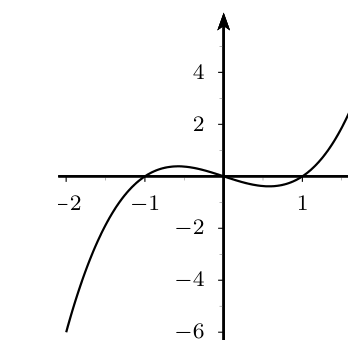
- $f''\ge0$ en $[-1,0]$ y en $[1,2]$: convexa ahí.
- $f''\le0$ en $[-2,-1]$ y en $[0,1]$: cóncava ahí.
- $f''$ cambia de signo en $-1$, $0$ y $1$: inflexiones en $x=-1,0,1$. Los extremos $\pm2$ del dominio no son de inflexión: la Def. 3.10 necesita un trozo a cada lado.
Olvidarse de que el intervalo del dominio es $[-2,2]$ y dar «convexa en $(1,\infty)$».
X3 · gráfica de $f''$ con ceros $x_0,x_1,x_2$ X p.77 (feb. 2017)
Sea $f$ una función cuya derivada segunda, en $[a,b]$, se representa en la gráfica. Llamamos $x_0,x_1,x_2$ a los puntos de corte de $f''(x)$ con el eje $x$, de menor a mayor. Indique en qué intervalos es $f$ cóncava y en cuáles convexa.
- Qué me piden
- Decir en qué intervalos $f$ es cóncava y en cuáles convexa, viendo la gráfica de $f''$ con ceros $x_0
- Cómo lo pienso
- Es X1 con letras en lugar de números: se mira el signo de $f''$ entre cada par de cortes consecutivos con el eje.
- Qué uso
- Prop. 3.10 de U (p. 136): $f''\ge0\Rightarrow$ convexa, $f''\le0\Rightarrow$ cóncava.
- Por dónde empiezo
- Escribir el signo de $f''$ en $[a,x_0]$, $[x_0,x_1]$, $[x_1,x_2]$ y $[x_2,b]$.
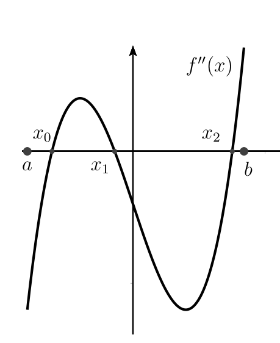
- $f''\le0$ en $[a,x_0]$ y en $[x_1,x_2]$: cóncava en cada uno.
- $f''\ge0$ en $[x_0,x_1]$ y en $[x_2,b]$: convexa en cada uno.
- (No se pide: inflexiones en $x_0$, $x_1$, $x_2$.)
Poner los signos al revés (convexa cuando $f''<0$): recuerda $f''>0$ = sonrisa = convexa.
X4 · $f(x)=x^4-2x$ X p.93 (feb. 2018)
Determine los intervalos de concavidad y convexidad de $f(x)=x^4-2x$.
- Qué me piden
- Dar los intervalos de concavidad y convexidad de $f(x)=x^4-2x$.
- Cómo lo pienso
- $f''=12x^2$ nunca es negativa: la gráfica es una sonrisa en todo $\mathbb R$, aunque $f''(0)=0$.
- Qué uso
- Prop. 3.10 de U (p. 136); Prop. 3.11 (p. 137): $f''(c)=0$ es solo condición necesaria de inflexión.
- Por dónde empiezo
- Derivar dos veces.
- $f'(x)=4x^3-2$ y $f''(x)=12x^2\ge0$ para todo $x$.
- Convexa en $(-\infty,\infty)$ (Prop. 3.10). No es cóncava en ningún intervalo.
- Sin inflexiones: $f''(0)=0$ pero no cambia de signo. (Con derivadas: $f'''(0)=0$, $f^{(4)}(0)=24\neq0$, orden par.)
«$f''(x)=12x^2\ge0$ para todo $x\in\mathbb R$; por la Prop. 3.10, $f$ es convexa en $\mathbb R$.»
«$f''(0)=0\Rightarrow$ inflexión en $0$» (la Prop. 3.11 es solo condición necesaria).
X5 · $f(x)=xe^x$: curvatura (el apartado de la integral es del Tema 6) X p.33 (feb. 2013)
Sea $f:\mathbb R\to\mathbb R$ dada por $f(x)=xe^x$. (a) ¿Cuáles son los intervalos de concavidad y de convexidad? (b) Calcule $\int f(x)\,dx$.
- Qué me piden
- Dar los intervalos de concavidad y convexidad de $f(x)=xe^x$ (el apartado de la integral es del Tema 6).
- Cómo lo pienso
- Como $e^x>0$ siempre, el signo de $f''$ es el del factor polinómico que acompaña a $e^x$.
- Qué uso
- Prop. 3.10 de U (p. 136); regla del producto.
- Por dónde empiezo
- Derivar dos veces sacando $e^x$ como factor común.
- $f'(x)=e^x+xe^x=(1+x)e^x$; $f''(x)=e^x+(1+x)e^x=(x+2)e^x$.
- Como $e^x>0$: $f''\le0\iff x\le-2$ y $f''\ge0\iff x\ge-2$.
- Cóncava en $(-\infty,-2]$, convexa en $[-2,\infty)$; inflexión en $x=-2$ (cambia el signo), punto $(-2,-2e^{-2})$.
Olvidar que $(xe^x)''$ lleva dos veces el término $e^x$: $(x+2)e^x$, no $(x+1)e^x$.
Fuera de este tema: apartado (b), $\int xe^x\,dx$ (requiere el Tema 6) X p.33
Es integración por partes: $\int xe^x\,dx=xe^x-\int e^x\,dx=xe^x-e^x+C=(x-1)e^x+C$. Se entenderá al estudiar el Tema 6.
X6 · $f(x)=\dfrac{x^2}{x+1}$ X pp.64-65 (feb. 2016)
Determine los intervalos donde la función $f(x)=\dfrac{x^2}{x+1}$ sea cóncava y donde sea convexa.
- Qué me piden
- Dar los intervalos de concavidad y convexidad de $f(x)=\frac{x^2}{x+1}$.
- Cómo lo pienso
- Es «hermana» de E 3.46: el cambio de curvatura ocurre en la asíntota vertical $x=-1$, que no está en el dominio.
- Qué uso
- Regla del cociente; Prop. 3.10 de U (p. 136); Def. 3.10 (p. 137).
- Por dónde empiezo
- Anotar el dominio, $\mathbb R\setminus\{-1\}$, y derivar con la regla del cociente.
- Dominio: $\mathbb R\setminus\{-1\}$.
- $f'(x)=\frac{2x(x+1)-x^2}{(x+1)^2}=\frac{x(x+2)}{(x+1)^2}$.
- $f''(x)=\frac{(2x+2)(x+1)^2-x(x+2)\cdot2(x+1)}{(x+1)^4}=\frac{2(x+1)\big[(x+1)^2-x(x+2)\big]}{(x+1)^4}=\frac2{(x+1)^3}$ (el corchete vale $1$).
- $f''>0\iff x>-1$: convexa en $(-1,\infty)$; $f''<0\iff x<-1$: cóncava en $(-\infty,-1)$.
- Sin inflexiones: $f''\neq0$ y $x=-1$ no es del dominio (asíntota vertical).
«$f''(x)=2/(x+1)^3$. Es $>0$ si $x>-1$ y $<0$ si $x<-1$: cóncava en $(-\infty,-1)$ y convexa en $(-1,\infty)$. No hay inflexión: $f''$ no se anula y $-1\notin\operatorname{Dom}f$.»
X7 · $f(x)=\dfrac1{x^2+4}$: curvatura (apartado b) X pp.89-90 (feb. 2018)
Sea $f(x)=\dfrac1{x^2+4}$. (a) Estudie si es continua y derivable en $\mathbb R$, determinando la derivada cuando exista. (b) Determine los intervalos de concavidad y convexidad. (c) Aproxime un punto fijo (ver abajo).
- Qué me piden
- Dar los intervalos de concavidad y convexidad de $f(x)=\frac1{x^2+4}$ (apartado b; los demás apartados son de otras secciones).
- Cómo lo pienso
- El denominador de $f''$ es siempre positivo: el signo lo da solo el numerador.
- Qué uso
- Prop. 3.10 de U (p. 136).
- Por dónde empiezo
- Derivar dos veces con la regla del cociente (o de la cadena).
- (a) $x^2+4>0$: continua y derivable en $\mathbb R$; $f'(x)=-\frac{2x}{(x^2+4)^2}$.
- (b) $f''(x)=-\frac{2(x^2+4)^2-2x\cdot2(x^2+4)\cdot2x}{(x^2+4)^4}=-\frac{2(x^2+4)-8x^2}{(x^2+4)^3}=\frac{6x^2-8}{(x^2+4)^3}$.
- $(x^2+4)^3>0$. $6x^2-8\ge0\iff x^2\ge\frac43\iff|x|\ge\frac2{\sqrt3}\approx1{,}155$.
- Convexa en $\big(-\infty,-\tfrac2{\sqrt3}\big]$ y en $\big[\tfrac2{\sqrt3},\infty\big)$; cóncava en $\big[-\tfrac2{\sqrt3},\tfrac2{\sqrt3}\big]$.
- Inflexiones en $x=\pm\frac2{\sqrt3}$ (cambia el signo de $f''$), con $f\big(\pm\tfrac2{\sqrt3}\big)=\frac1{4/3+4}=\frac3{16}$.
«$f''(x)=\dfrac{6x^2-8}{(x^2+4)^3}$, con denominador positivo. $f''\ge0\iff|x|\ge2/\sqrt3$. $f$ es convexa en $(-\infty,-2/\sqrt3]$ y en $[2/\sqrt3,\infty)$ y cóncava en $[-2/\sqrt3,2/\sqrt3]$.»
«Aproxime un punto fijo de $f$, sabiendo que es contractiva y que el punto fijo está en $[0,1]$, con $x_0=0$ y tres iteraciones.» Iterando $x_{n+1}=f(x_n)$: $x_1=\tfrac14$, $x_2=\tfrac{16}{65}\approx0{,}24615$, $x_3=\tfrac{4225}{17156}\approx0{,}24627$. Se explica en el tema 2.4.
X p.90X8 · $f(x)=(3x-1)e^x$: crecimiento, inflexión y extremos (apartados b y c) X pp.70-71 (sep. 2016)
Sea $f(x)=(3x-1)e^x$ definida en $\mathbb R$. (a) Polinomio de Taylor de orden 3 centrado en $x=-1$ (apartado de la sección 3.1). (b) Intervalos de crecimiento y decrecimiento de $f$. ¿Tiene puntos de inflexión? (c) Puntos donde se alcanzan extremos relativos y si son máximos o mínimos.
- Qué me piden
- Para $f(x)=(3x-1)e^x$: dar los intervalos de crecimiento y decrecimiento, decir si hay inflexiones y dónde están los extremos relativos (apartados b y c).
- Cómo lo pienso
- Cada derivada suma $3$ al término independiente del factor polinómico: $f^{(k)}(x)=(3x-1+3k)e^x$. Como $e^x>0$, los signos los da ese polinomio de grado 1.
- Qué uso
- Crecimiento con Prop. 2.4 (U p. 98); extremos con Prop. 3.6-3.7 (U p. 131); inflexión con Prop. 3.12 (U p. 137).
- Por dónde empiezo
- Calcular $f'$, $f''$ y $f'''$ sacando $e^x$ factor común.
- $f'=(3x+2)e^x$, $f''=(3x+5)e^x$, $f'''=(3x+8)e^x$.
- (b) Crecimiento. $e^x>0$: el signo es el de $3x+2$. Decreciente en $(-\infty,-\tfrac23]$, creciente en $[-\tfrac23,\infty)$.
- (b) Inflexión. $f''=0\iff x=-\tfrac53$. $f'''(-\tfrac53)=3e^{-5/3}\neq0$ (orden 3, impar, positiva): inflexión en $x=-\tfrac53$, de cóncava a convexa (Prop. 3.12). Equivalente: $f''<0$ si $x<-\tfrac53$ (cóncava) y $f''>0$ si $x>-\tfrac53$ (convexa).
- (c) Extremos. Único crítico $x=-\tfrac23$; $f$ decrece antes y crece después: mínimo relativo, valor $f(-\tfrac23)=-3e^{-2/3}$. (También $f''(-\tfrac23)=3e^{-2/3}>0$.)
Contestar a «¿tiene puntos de inflexión?» con el punto donde $f'=0$ (que es el mínimo, no la inflexión).
Valores en $-1$: $f(-1)=-4e^{-1}$, $f'(-1)=-e^{-1}$, $f''(-1)=2e^{-1}$, $f'''(-1)=5e^{-1}$. Entonces $p_3(x)=-4e^{-1}-e^{-1}(x+1)+e^{-1}(x+1)^2+\tfrac56e^{-1}(x+1)^3$.
X p.70X9 · $f(x)=e^{x^k}$ para $k=2$ y $k=3$: curvatura X pp.127-128 (Electrónica)
Para $f(x)=e^{x^k}$ con $k\in\{0,1,2,3,\dots\}$: calcule su dominio y su imagen según $k$; sus intervalos de crecimiento, decrecimiento, concavidad y convexidad para $k=2$ y $k=3$; sus asíntotas y extremos relativos para $k=2$ y $k=3$.
- Qué me piden
- Estudiar la curvatura de $f(x)=e^{x^k}$ para $k=2$ y $k=3$ (más dominio, imagen, asíntotas y extremos).
- Cómo lo pienso
- Con la regla de la cadena, $(e^u)''=(u''+u'^2)e^u$ y $e^u>0$ siempre: el signo de $f''$ lo da el polinomio $u''+u'^2$.
- Qué uso
- Prop. 3.10 de U (p. 136) y Def. 3.10 (p. 137); asíntotas (U p. 49).
- Por dónde empiezo
- Tomar $u=x^k$ y calcular $f'$ y $f''$ para $k=2$.
- Dominio: $\mathbb R$ para todo $k$. Imagen: $k=0$: $x^0=1$ y $f\equiv e$, imagen $\{e\}$. $k\ge2$ par: $x^k\in[0,\infty)$, imagen $[1,\infty)$. $k$ impar: imagen $(0,\infty)$.
- $k=2$. $f'=2xe^{x^2}$: decreciente en $(-\infty,0]$, creciente en $[0,\infty)$; mínimo relativo y absoluto en $0$ ($f(0)=1$). $f''=(4x^2+2)e^{x^2}>0$: convexa en $\mathbb R$, sin inflexiones. Sin asíntotas ($f\to\infty$ y $f/x\to\pm\infty$ en $\pm\infty$).
- $k=3$. $f'=3x^2e^{x^3}\ge0$, que solo vale $0$ en $x=0$: creciente en $\mathbb R$; $x=0$ es crítico sin extremo. $f''=(6x+9x^4)e^{x^3}=3x(3x^3+2)e^{x^3}$, con ceros en $x=0$ y $x=-\sqrt[3]{2/3}\approx-0{,}874$.
intervalo $3x$ $3x^3+2$ $f''$ $f$ $(-\infty,-\sqrt[3]{2/3})$ $-$ $-$ $+$ convexa $(-\sqrt[3]{2/3},0)$ $-$ $+$ $-$ cóncava $(0,\infty)$ $+$ $+$ $+$ convexa - Dos inflexiones en $k=3$: $x=-\sqrt[3]{2/3}$ y $x=0$. Asíntota horizontal $y=0$ cuando $x\to-\infty$ ($e^{x^3}\to0$); ninguna en $+\infty$.
Quedarse con la inflexión que coincide con el punto crítico y olvidar la otra raíz de $f''$.
X10 · dibujar una gráfica creciente, convexa, cóncava y con dos asíntotas X p.99 (Electrónica)
Dibuje la gráfica de una función que sea creciente en todo $\mathbb R$, convexa en $(-\infty,0)$, cóncava en $(0,\infty)$ y tenga dos asíntotas (una horizontal y una oblicua).
- Qué me piden
- Dibujar una función creciente en $\mathbb R$, convexa en $(-\infty,0)$, cóncava en $(0,\infty)$ y con una asíntota horizontal y otra oblicua.
- Cómo lo pienso
- Es el Ejercicio 3.48 cambiado de signo: $\operatorname{arctg}x$ a la izquierda y $\tfrac x2+\operatorname{arctg}x$ a la derecha.
- Qué uso
- Asíntotas (U Prop. 1.12, p. 49); Prop. 2.4 (p. 98); Prop. 3.10 (p. 136) y Def. 3.10 (p. 137).
- Por dónde empiezo
- Escribir la función a trozos y comprobar la continuidad en $0$.
- $f(x)=\begin{cases}\operatorname{arctg}x,&x\le0,\\[2pt] \tfrac x2+\operatorname{arctg}x,&x>0.\end{cases}$ Continua en $0$ (ambos lados valen $0$).
- Creciente: $f'=\frac1{1+x^2}>0$ ($x<0$) y $f'=\tfrac12+\frac1{1+x^2}>0$ ($x>0$), y $f$ continua en $0$.
- Curvatura: $f''=\frac{-2x}{(1+x^2)^2}$ en ambos trozos: $>0$ si $x<0$ (convexa), $<0$ si $x>0$ (cóncava). Inflexión en $0$.
- Asíntotas: $y=-\tfrac\pi2$ cuando $x\to-\infty$; $y=\tfrac x2+\tfrac\pi2$ cuando $x\to+\infty$.
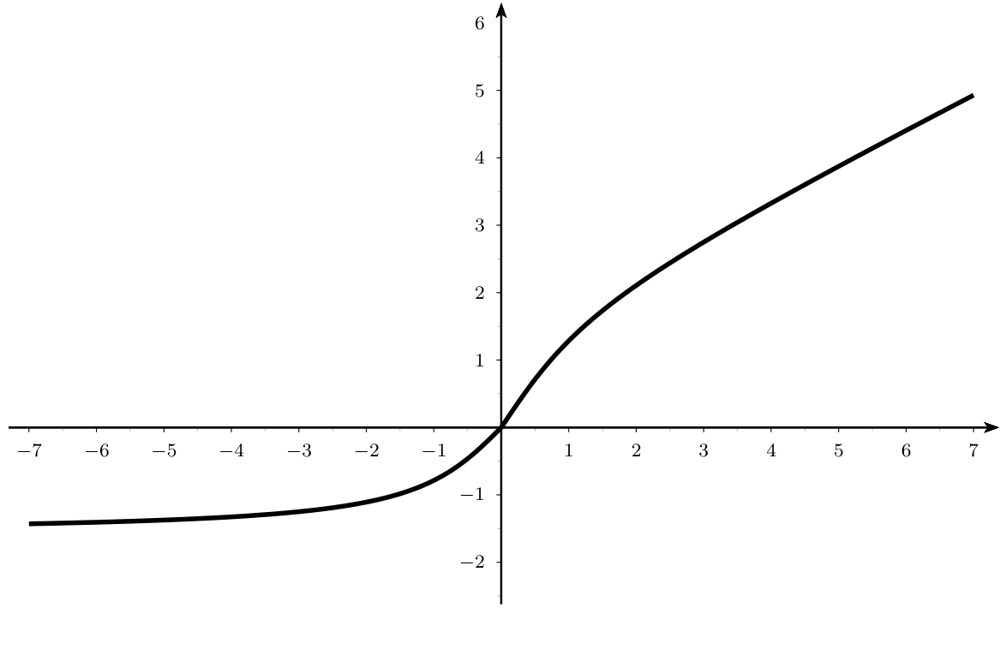
8Errores frecuentes, chuleta y lista de comprobación
Errores frecuentes
- Estudiar $f'$ en vez de $f''$ para la curvatura, o confundir «creciente» con «convexa».
- Unir intervalos con $\cup$ al decir «convexa en…».
- «$f''(c)=0\Rightarrow$ inflexión» (falso: $x^4$) y «inflexión $\Rightarrow f'(c)=0$» (falso: $2x^3+6x$).
- Poner una inflexión en una asíntota vertical (punto fuera del dominio).
- Descartar una inflexión porque no existe $f''(c)$, cuando $c$ es del dominio y la curvatura cambia (E 3.40).
- Concluir «convexa en $\mathbb R$» por serlo a cada lado de un punto malo (E 3.45).
- Olvidar una raíz de $f''$ o un punto fuera del dominio al partir los intervalos.
- Confundir la nomenclatura U (convexa $=\cup$) con la de Stewart/Larson (cóncava hacia arriba).
Chuleta
| Concepto | Enunciado | Fuente |
|---|---|---|
| Convexa ($\cup$) | $f((1-t)x+ty)\le(1-t)f(x)+tf(y)$: gráfica bajo la cuerda | U p.135 |
| Cóncava ($\cap$) | $-f$ convexa: gráfica sobre la cuerda | U p.135 |
| Con $f'$ | convexa $\Leftrightarrow f'$ creciente; cóncava $\Leftrightarrow f'$ decreciente ($f$ derivable) | U p.136 |
| Con $f''$ | $f''\ge0\Rightarrow$ convexa; $f''\le0\Rightarrow$ cóncava ($f$ dos veces derivable) | U p.136 |
| Punto de inflexión | $f$ pasa de cóncava a convexa o viceversa (en un punto del dominio) | U p.137 |
| Condición necesaria | inflexión $\Rightarrow f''(c)=0$ (si $f''$ existe); el recíproco es falso | U p.137 |
| Derivadas superiores | $f''(c)=0$; primera derivada no nula de orden impar: inflexión ($+$: cóncava $\to$ convexa; $-$: al revés); par: no | U p.137 |
| Asíntotas | vertical: límite lateral $\pm\infty$; horizontal: $\lim_{x\to\pm\infty}f=b$; oblicua: $m=\lim_{x\to\pm\infty}\frac{f(x)}{x}$, $b=\lim_{x\to\pm\infty}(f(x)-mx)$ | U pp.48-50 |
| Estudio completo | dominio, cortes, asíntotas, $f'$, $f''$, tabla, dibujo | U p.139 |
Lista de comprobación
- Sé explicar con un dibujo qué es una función convexa y una cóncava (cuerdas y tangentes) y cuál es cuál en el vocabulario de U.
- Sé calcular $f''$, factorizarla y hacer la tabla de signos para dar los intervalos de curvatura.
- Sé escribir cada intervalo por separado, sin unir con $\cup$.
- Sé decidir si un punto es de inflexión (cambio de signo de $f''$ o Prop. 3.12) y por qué $f''(c)=0$ no basta.
- Sé cuándo no hay inflexión aunque $f''$ cambie de signo (el punto no está en el dominio).
- Sé leer concavidad e inflexiones en la gráfica de $f''$ y en la de $f'$.
- Sé decidir si $f$ es convexa en todo un intervalo cuando hay un punto problemático (E 3.41, 3.45).
- Sé calcular las asíntotas verticales, horizontales y oblicuas.
- Sé hacer el estudio completo y dibujar una función racional (E 3.46).
- Sé construir una función con propiedades dadas, sumando una recta si hace falta una asíntota oblicua (E 3.47-3.48, X Electrónica).